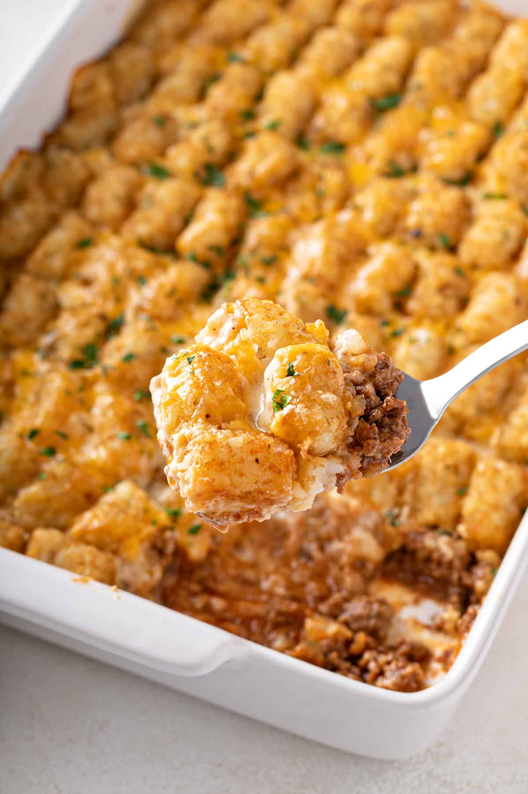

Tater Tot Casserole

Description
This Tater Tot casserole is a quick and easy dinner that everyone will love. Just four basic ingredients come together for this comforting dish.
Ingredients
- beef
- canned soup
- salt and black pepper
- tater tots
- cheese
Steps
- Cook the ground beef, then stir in the soup and seasonings.
- Transfer the beef to a baking dish. Top with tater tots, then the cheese.
- Bake until the tots are golden brown.
Return to main page